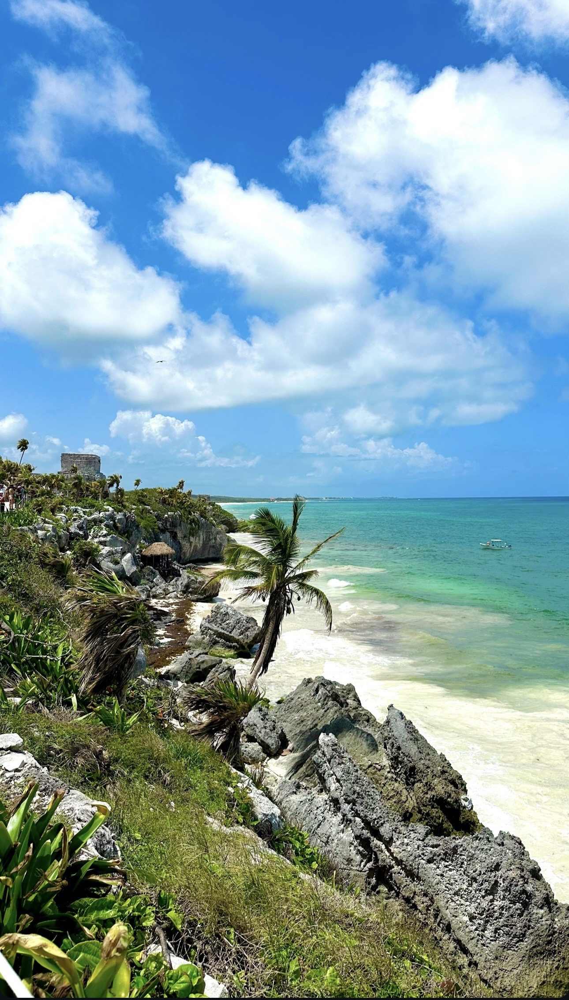
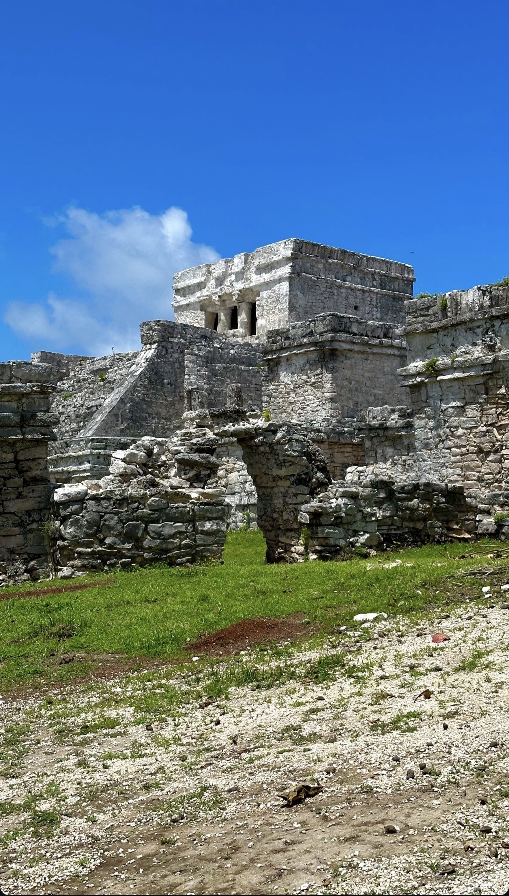
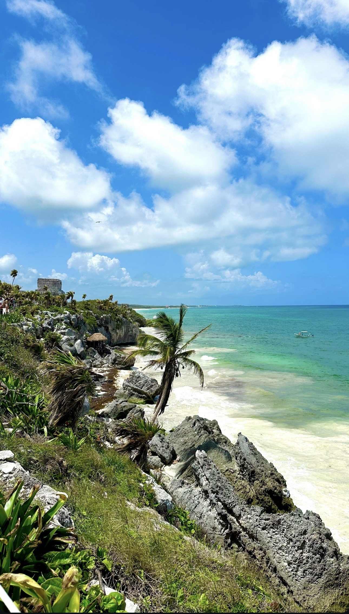
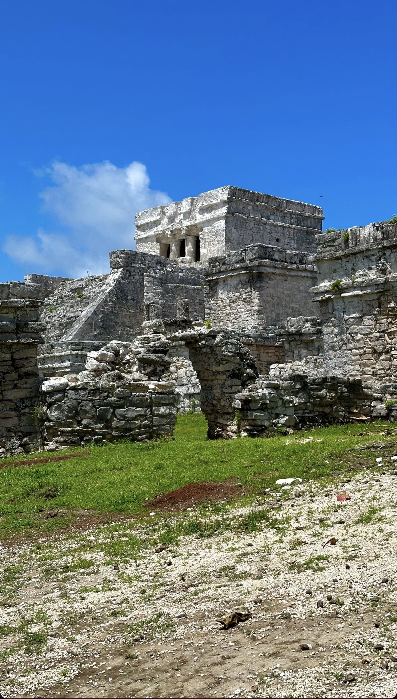

Voyages
Explorer, découvrir et m'ouvrir au monde. Chaque voyage est une leçon de vie, une source d'inspiration et une aventure.
Japon (2023)
Depuis que je suis petit, j'ai toujours rêvé d'aller au Japon. C'était un objectif personnel fort. Pour mes 20 ans, j'ai travaillé et économisé pour concrétiser ce rêve et je suis parti explorer le pays pendant trois semaines. Ce voyage a été une incroyable leçon de respect, de culture et de découverte, de Tokyo à Kyoto.

New York & Mexique
Partager l'aventure est aussi important que l'aventure elle-même. J'ai eu la chance de découvrir l'énergie débordante de New York et la richesse culturelle et naturelle du Mexique lors de voyages mémorables avec ma copine.

 



Cuba (2017)
Le voyage qui a le plus changé ma vie est sans aucun doute celui à Cuba en 2017 avec mes parents. La découverte de cette culture, de cette histoire et de la gentillesse de ses habitants a été une véritable révélation. C'est là-bas qu'est né mon amour pour la musique latine, qui ne m'a jamais quitté.
Ce voyage m'a vraiment fait réfléchir sur moi, sur la valeur des choses simples, sur le bonheur matériel face à la richesse des relations humaines, et sur l'importance de vivre l'instant présent.